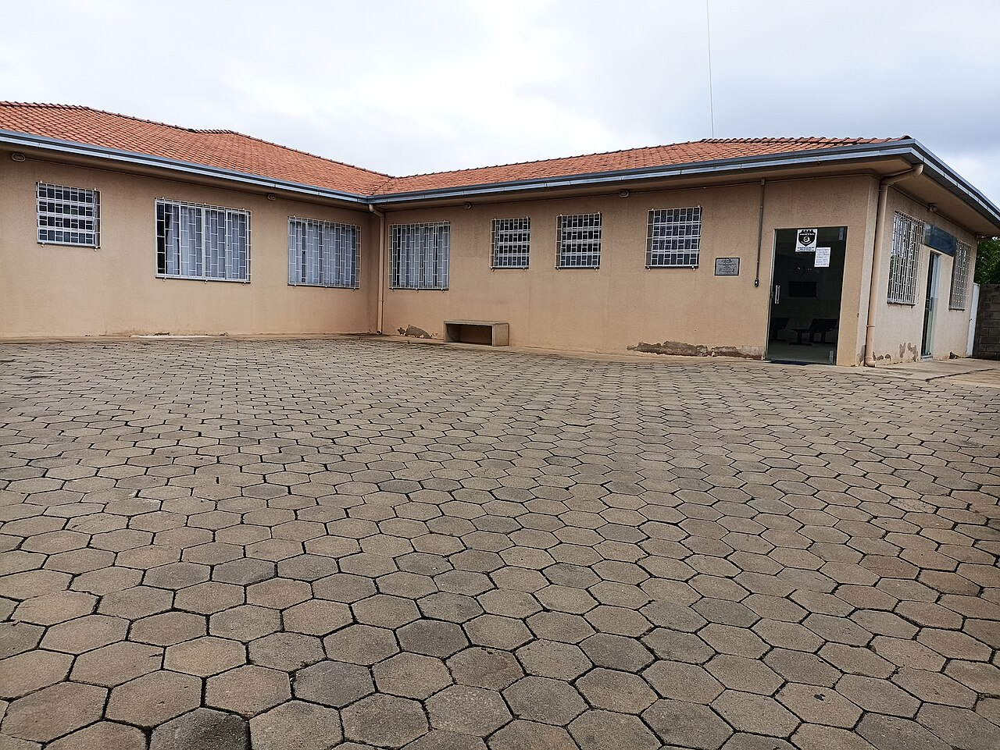
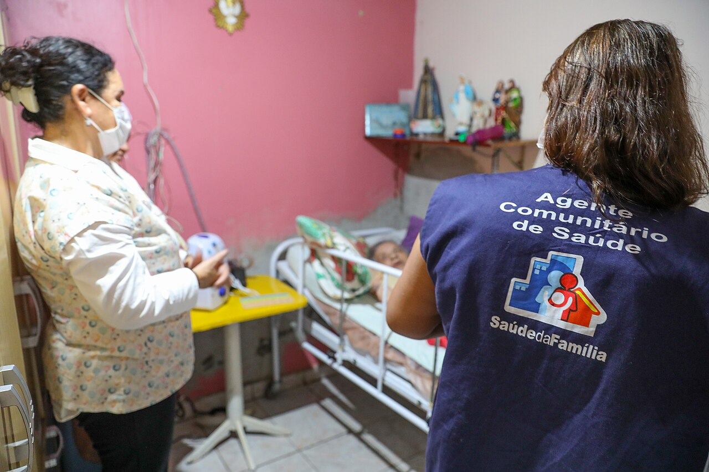
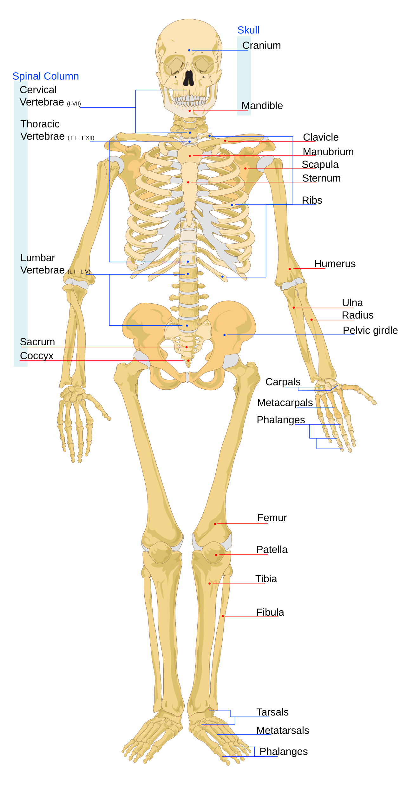
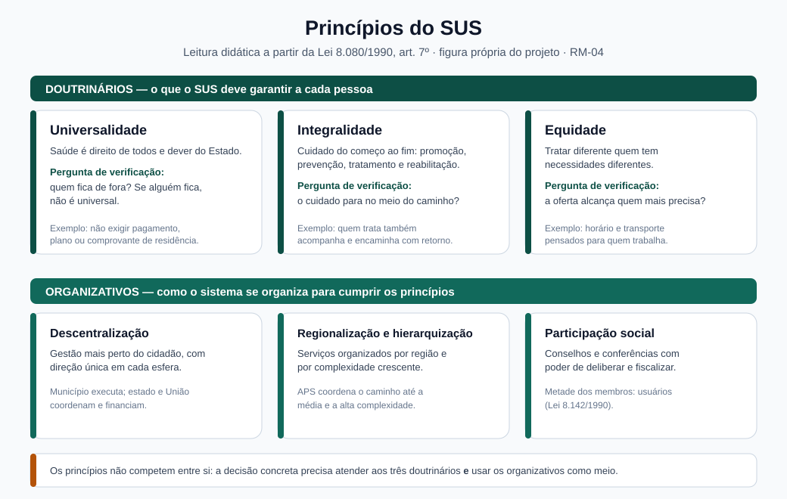
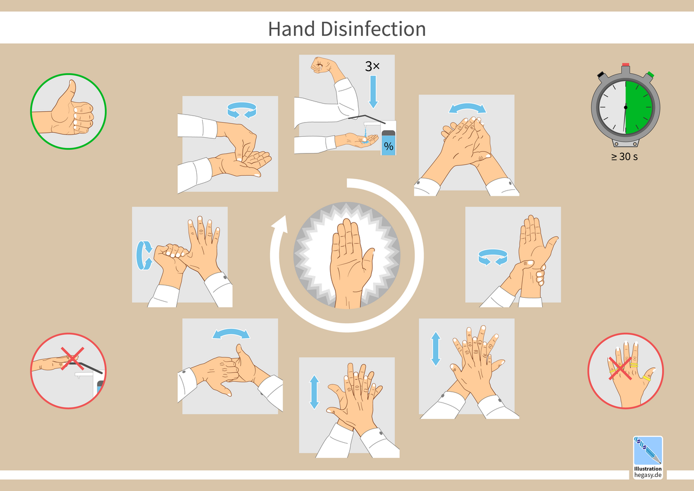

Unidade Básica de Saúde
Porta de entrada preferencial · foto de contexto brasileiro
Esta página é o mock de observação: cada token e cada componente está aqui para ser visto, testado e aprovado antes de virar interface do produto. Não é vitrine — é bancada de decisão.
Cinco regras que resolvem a maioria das dúvidas de layout sem discussão de gosto.
Corpo ≥ 16 px, entrelinha 1.6, medida de 66 caracteres. Texto de estudo não compete com enfeite.
Um botão primário por bloco. O resto é secundário ou texto — hierarquia se vê antes de se ler.
Uma ideia por seção, até 7 itens por lista. Espaço em branco é recurso didático, não desperdício.
Foco, hover, erro, carregando, vazio e desabilitado são desenhados junto com o componente.
Nenhum selo, número ou gráfico sugere certificação, aprovação ou resultado clínico (RM-02).
Contraste AA, alvo de 44 px, foco visível e alternativa textual em toda informação visual.
A base do sistema. Mudar aqui muda tudo — e é por isso que se aprova aqui.
Família: pilha do sistema
(system-ui). Sem fonte externa: zero requisição, zero CLS, carrega offline.
Escala 4/8/12/16/24/32/48.
Nada de margin: 13px.
Raios: 12 px (controle), 16 px (cartão), pílula (etiqueta).
Sombra indica flutuação. Conteúdo estático usa borda, não sombra.
Cada bloco mostra o componente, seus estados e a regra de uso. Aprovar componente é aprovar comportamento.
Um primário por bloco.
.small só em barra de ferramentas, nunca na ação principal.
Erro sempre junto do campo, com texto que diz o que fazer, não só "inválido".
Precauções, EPI, resíduos e processamento de artigos.
62% concluído · 18 h restantes
Status nunca depende só de cor: o texto carrega o significado.
| Unidade | Itens | Acertos | Situação |
|---|---|---|---|
| U1 — Biossegurança e risco | 20 | 17 | Consolidado |
| U2 — Higiene das mãos | 22 | 13 | Revisar |
| U5 — EPI e EPC | 24 | 9 | Crítico |
Cabeçalho com
scope, números alinhados à direita, rolagem dentro do contêiner — a página
nunca rola na horizontal (RM-03).
Contêiner de 1120 px, grade de 12 colunas, respiro de 20 px nas laterais.
Desktop: 12 colunas · tablet: 8 · celular: 4 (empilhado).
Testar em 320, 360, 390, 414, 768, 1024, 1280 e 1920 px (RM-03, M2).
O que já está implementado nesta página e pode ser verificado agora.
Texto principal 15,05:1; ação primária 9,45:1; link 6,57:1 — todos acima de AA. O amarelo é usado só como fundo.
Tab percorre na ordem visual, com foco de 3 px visível em qualquer fundo. Há atalho "pular para o conteúdo".
Todo controle tem no mínimo 44×44 px, inclusive no celular e em botão pequeno.
Nenhuma fonte, ícone ou script de terceiro: carrega offline, sem CLS e sem rastreamento.
A imagem é conteúdo do curso, não decoração. Aqui ela é observada nas disposições em que vai aparecer de verdade: abertura, cartão, figura no texto e recorte por proporção. Todas as imagens desta seção têm licença registrada e crédito visível.
Texto à esquerda e imagem à direita, em 16:10. No celular a imagem desce e o texto vem primeiro: quem lê no telefone começa pela informação, não pela foto.

Foto: Paulo H. Carvalho / Agência Brasília — CC BY 2.0, via Wikimedia Commons.
Miniatura sempre em 4:3, recortada por
object-fit: cover. O texto nunca é cortado porque a imagem tem altura fixa e a
legenda fica fora dela.

Porta de entrada preferencial · foto de contexto brasileiro

Diagrama com rótulos · domínio público

Figura própria do projeto · vetorial
Fotos e diagramas: Túllio F (CC BY-SA 4.0) · Mariana Ruiz (domínio público) · figura própria EN_430.
Largura máxima de 720 px, legenda abaixo e crédito na mesma linha. Quando a imagem tem texto próprio, a legenda traduz e explica — a figura não substitui a informação escrita.

A mesma foto em três proporções. O recorte muda o enquadramento, não a proporção da tela — e nunca distorce a imagem.
alt descritivo e crédito; texto essencial nunca fica só dentro da
imagem; width/height declarados para não haver salto de layout;
loading="lazy" fora da primeira dobra; nenhuma imagem sem licença registrada.O formulário é o ponto onde o layout mais quebra: rótulo que some, campo estreito, teclado que cobre o botão, zoom automático no celular. Aqui ele é testado nas larguras reais de uso.
type="email", type="tel",
inputmode="numeric" para número, e autocomplete nos campos de identidade.aria-invalid e aria-describedby — e texto que diga o que fazer.O que muda em cada faixa de largura, do celular pequeno ao monitor 4K. Testar em todas antes de aprovar.
| Faixa | Aparelho típico | Grade | Imagem | Formulário |
|---|---|---|---|---|
| 320–479 px | Celular pequeno | 1 coluna | 100% com recorte 4:3 | 1 coluna; botão full |
| 480–767 px | Celular grande, paisagem | 1 coluna | 100%; variante 480 px | 1 coluna; alvo 44 px |
| 768–1023 px | Tablet retrato | 2 colunas | 50% no cartão | 1 coluna larga |
| 1024–1439 px | Notebook | 3 colunas | variante 800 px | 2 colunas |
| 1440–1919 px | Desktop | 3 colunas + contêiner | variante 1200 px | 2 colunas |
| 1920–2559 px | Full HD | contêiner 1120 central | máx. 1200 px | 2 colunas, largura fixa |
| ≥ 2560 px | QHD / 4K / ultrawide | contêiner 1120 central, sem esticar | máx. 1200 px | largura fixa; nunca full-bleed |
:hover.A página só cumpre o papel quando a observação vira decisão escrita. Cada linha é uma decisão sobre um componente.
| Componente / token | O que se observou | Decisão | Responsável · data |
|---|---|---|---|
| Cor primária | |||
| Botão primário | |||
| Campo com erro | |||
| Cartão de componente | |||
| Tabela de desempenho | |||
| Navegação no celular | |||
| Abertura com imagem (6.1) | |||
| Cartão com miniatura (6.2) | |||
| Figura com legenda e crédito (6.3) | |||
| Recorte por proporção (6.4) | |||
| Formulário — celular (7.1) | |||
| Formulário — tablet/desktop (7.1) | |||
| Matriz de telas (7.3) |
Decisões aprovadas passam a valer para o produto; objeções viram pendência com prazo. O registro alimenta o Design System do projeto, não um arquivo morto.